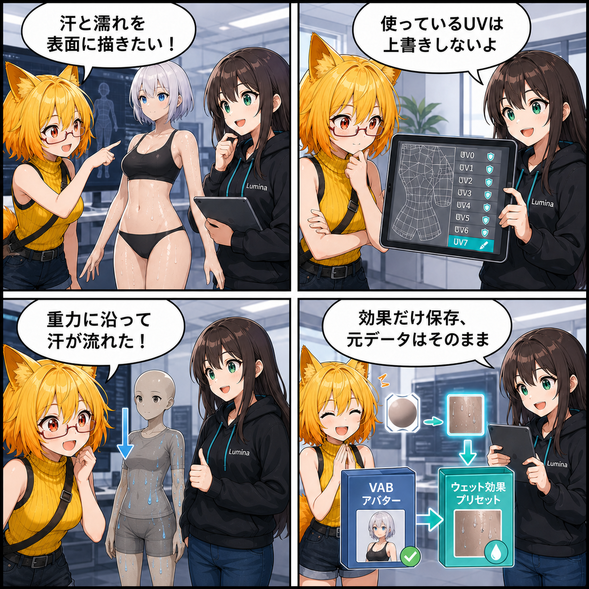

濡れを描いて、汗を流して、元データは濡らさない
2026-08-12 の開発日記では、アバターや背景の表面へ濡れ・汗・流れを重ねる Surface Wetness / Surface Paint 基盤を取り上げます。見た目を変えるだけでなく、安全な専用UVの選択、必要になった時だけのGPUリソース確保、VAB／VBG本体から分離したPreset保存までをひとつの仕組みとして実装しました。
main ブランチで、集計期間内に記録された3コミットをもとにしています。4コマ内の会話や見せ方には、読み物として分かりやすくするための演出があります。集計期間は 2026-08-11 03:00:00 JST から 2026-08-12 02:59:59 JST までです。
集計終了時点の最終HEADは b6403ee（「残存するシーン設定とネイティブプラグインを追加」）で、対象コミットは 3件 でした。期間全体では151ファイル、20,354行追加・831行削除です。確認時点に未コミット差分が3ファイルありますが、集計期間内の実装と確定できないため、この記事の実績には含めていません。
今日の主題：表面効果を、元の見た目へ重ねる
今回の基盤は、VABアバターの肌・髪・衣装と、VBG背景の床・壁・小物へ、濡れ、水膜、汗、水滴、流れ跡、乾燥をRuntimeで重ねるためのものです。共通Lit／Toon ShaderとlilToon向けAdapterを用意し、元Materialの色、透過、輪郭、発光などを正本として保ったまま、必要なMaterial Slotだけへ派生Materialを割り当てます。
機能を使っていないRendererではWetness用Keywordを無効にし、追加RenderTextureやFluid Simulationを作りません。局所Paintが初めて要求された時だけCanvasとTextureを遅延生成するため、対応機能があるだけで全モデルのGPU負荷が増える構造を避けています。
既存UVを、濡れ表現のために壊さない
表面へ正確に描くには、三角形が重ならないPaint用UVが必要です。しかし、アバターのUV0は本来のTexture、ほかのUV ChannelもlilToon表現やLightmapなどに使われていることがあります。
そこでConverter共通のAnalyzerがUV0〜UV7を検査し、範囲外、面積ゼロ、鏡像や三角形の重複をFail-closedで判定します。使える既存Channelだけを再利用し、安全なChannelがなければ局所Paintを無効にして元UVを守ります。VBG 2.1とVAB 4.6では、検証済みPaint UVをBackend非依存のSidecarとして保存し、GLBや元Meshへ無理な上書きをしません。
汗量から、光沢・水滴・流れへ
SurfaceSweatRuntimeController は、0〜1の汗量を全体の肌光沢、局所汗の発生量、水滴、Gravity／Flow、乾燥バランスへ分配します。低い汗量では全体光沢だけを変え、局所Textureを確保しません。汗量が上がると安全なPaint UVを持つ肌へ局所汗を生成し、さらに高い段階で重力方向の流れを有効にします。
流れの方向はUV画像の上下をそのまま使わず、Mesh表面上の実際の座標変化からWorld GravityをUV移動量へ変換します。肩のようにUVが歪んだ場所でも、汗が横へ帯状に逃げにくくするためです。安全な局所UVがないモデルは、危険なUVへ強制Fallbackせず、全体光沢だけを使うGlobal-only表示へ切り替えます。
保存するのは効果、元ファイルはそのまま
Runtimeで描いた濡れや汗は、VAB／VBG本体へ自動で書き戻しません。明示的に保存した時だけ、Viewer内部の UserData/Presets/SurfacePaint へAtlas PNGとGlobal Wetness／Sweat状態を保存します。
読込時には、対象ID、Content Revision、Renderer・UV Channel・Layout Hashなどから作るLayout Signatureの完全一致を要求します。内容やMesh配置が変わったPresetは、Fluid Groupを初期化する前に拒否します。Global-onlyモデルはPNGを1枚も作らず、全体状態だけを保存・復元できます。
テストで境界を固める
Surface Paint／Wetness基盤には、Brush、Decal、Clear、Seam Padding、任意UV Channel、Gravity／Flow、乾燥、VAB／VBGのSidecar往復、lilToon Adapter、UI、Preset復元を確認するEditorテストとVisual Regressionが追加されました。続くコミットではSurface SweatのRuntimeテストが8件追加され、汗量の段階制御、Global-only fallback、局所汗、Flow、遅延初期化などを検証しています。
最後のコミットではMainSceneの残存設定とネイティブプラグインが追加されました。記事の主題は、3コミットの大部分を占めるSurface Wetness／Surface Paint実装と、そのRuntime検証に絞っています。
4コマの裏話
4コマでは、ろひがアバターへ汗を描こうとしたところから始まり、ルミナが「使っているUVは上書きしない」と安全策を示します。続いて汗が重力に沿って流れる様子を確認し、最後は効果をPresetへ保存しても元のVABは乾いたまま、という非破壊設計で締めます。
今日のまとめ
今回の実装は、濡れのShaderを追加しただけではありません。安全なUV選択、Backend非依存の保存形式、必要時だけのGPU確保、局所表現が使えない時のGlobal-only fallback、元ファイルと分離したPresetまでを一つの境界として整えました。
見た目はしっかり濡らす。でも、モデルのUVも元ファイルも勝手に濡らさない。Surface Wetnessを安心して使うための土台が、実装とテストの両方で形になった一日です。
本日のひとこと： 汗は流しても、元データは流さない。